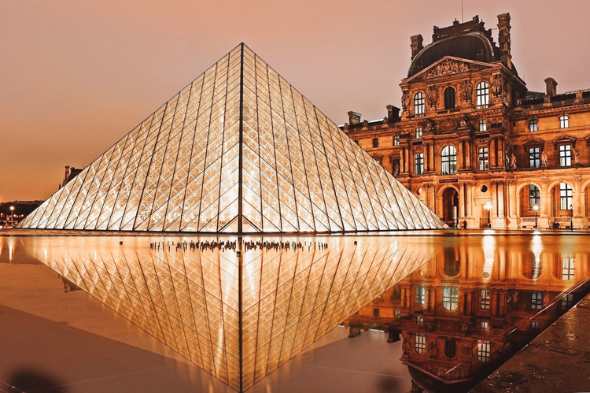
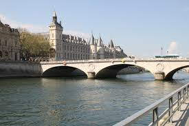

Museu do Louvre: Um dos maiores e mais famosos museus do mundo, lar da Mona Lisa.

Torre Eiffel: O principal símbolo da França, com vista panorâmica incrível da cidade.

Rio Sena: Um passeio de barco pelo Sena é uma das experiências mais românticas da Europa.